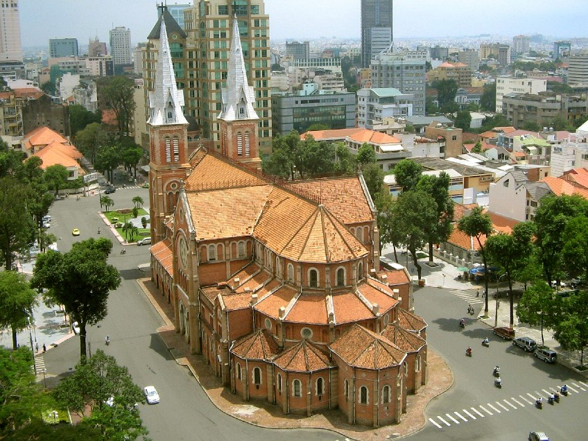
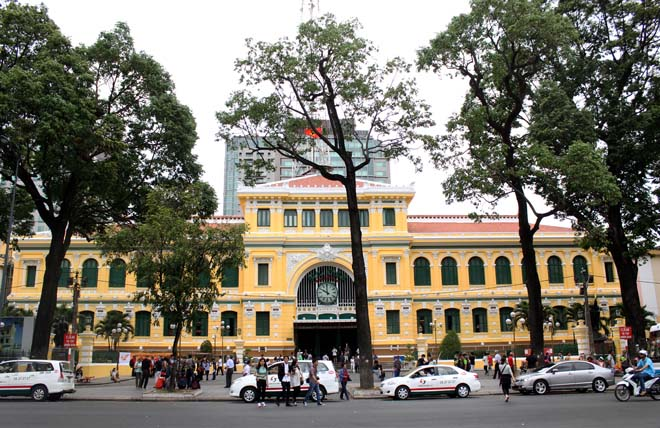

DU LỊCH
THÀNH PHỐ HỒ CHÍ MINH
Địa điểm tham quan nổi bật

Chợ Bến Thành
Chợ Bến Thành là một ngôi chợ nằm tại quận 1, Thành phố Hồ Chí Minh. Chợ được khởi công xây dựng từ năm 1912, hình ảnh đồng hồ ở cửa nam của ngôi chợ này được xem là biểu tượng không chính thức của Thành phố Hồ Chí Minh...
Các tin khác
Tham Quan
Nhà Thờ Đức Bà
Nằm ở trung tâm Quận 1 (TP. Hồ Chí Minh), nhà thờ Đức Bà Sài Gòn nổi bật với kiến trúc Pháp cổ, không gian rộng thoáng từ bên ngoài tới bên trong thánh đường. Đây là địa điểm mà du khách không thể bỏ qua...
Tham Quan
Bưu Điện Thành Phố
Bưu điện trung tâm Sài Gòn với lối kiến trúc Phục Hưng tuyệt đẹp, hiện vẫn còn được giữ nguyên vẹn đến tận bây giờ. Có thể thấy, bưu điện chính là nét chấm phá hoài cổ giữa lòng thành phố sầm uất, hiện đại....
Tham Quan
Công Viên Đầm Sen
Nếu có cơ hội du lịch tới thành phố Hồ Chí Minh, bạn đừng bỏ lỡ cơ hội khám phá Dinh Độc Lập. Nơi đây lưu giữ những dấu mốc đáng tự hào của dân tộc trong cuộc chiến tranh khốc liệt. Hy vọng, bạn sẽ c...
Tham Quan

Thảo Cầm Viên
Thảo Cầm Viên Sài Gòn (cũng còn được gọi là Sở Thú) là công viên bảo tồn động vật - thực vật ở Thành phố Hồ Chí Minh, Việt Nam. Đây là vườn thú lâu đời đứng hàng thứ tám trên thế giới.[1] ...